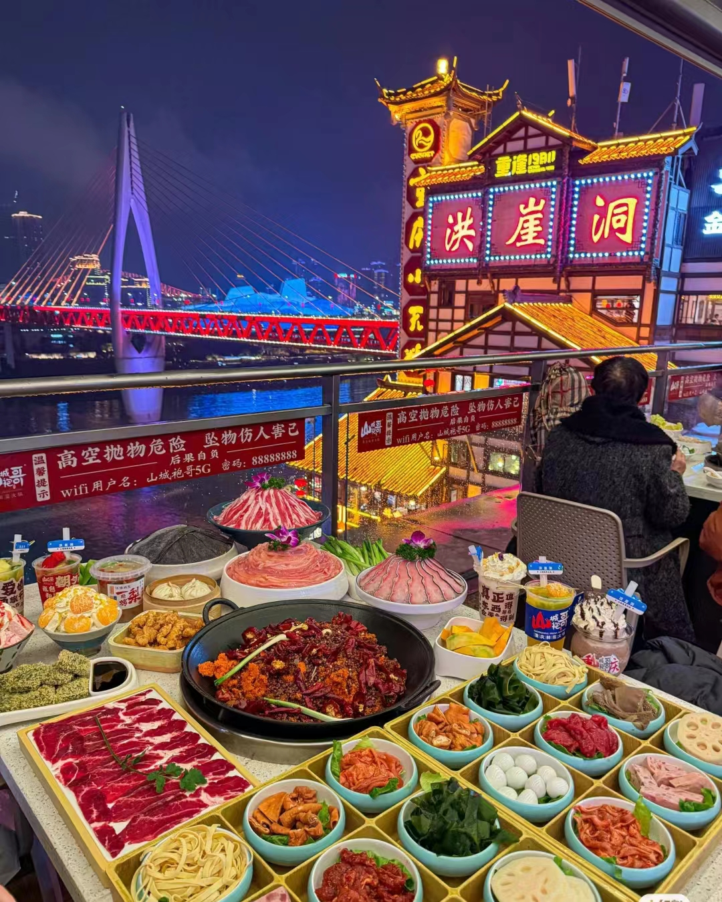
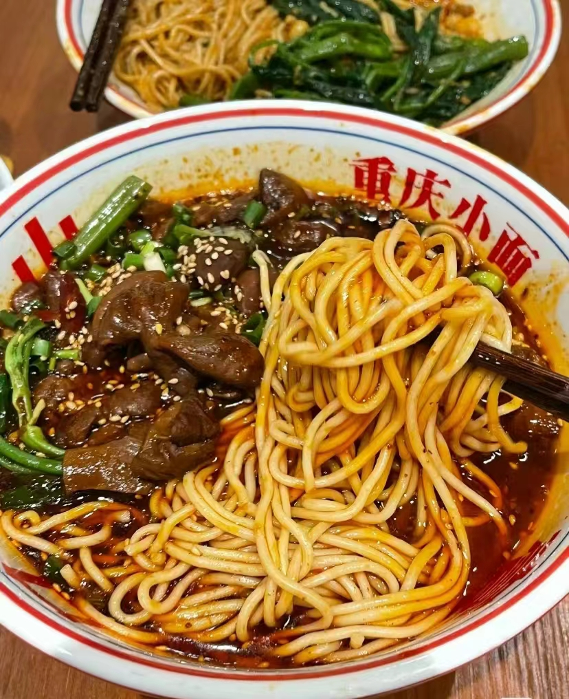
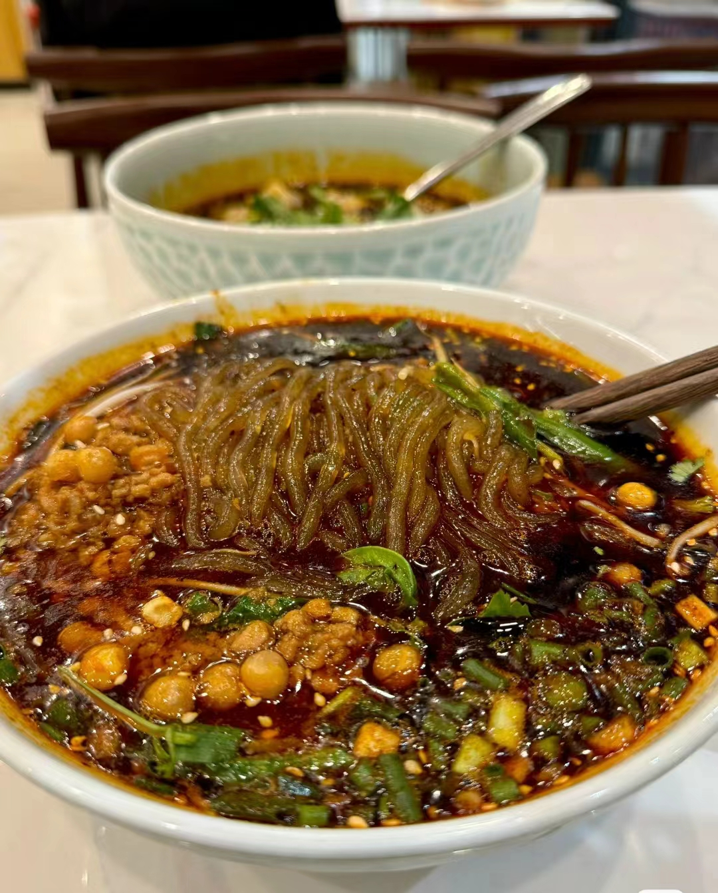
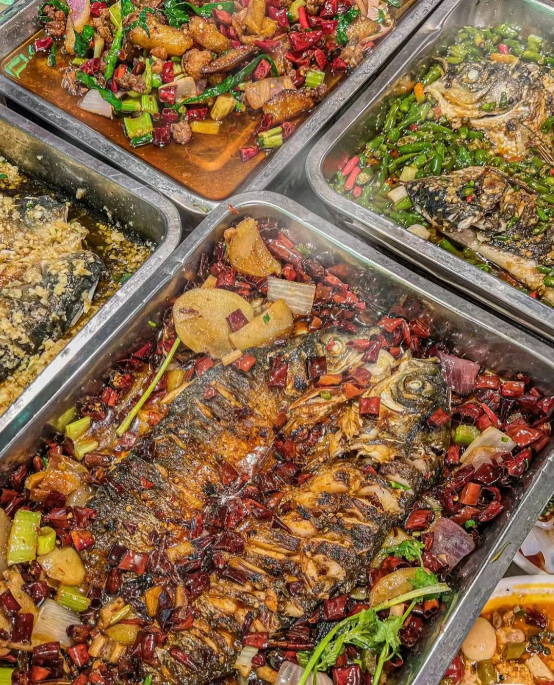
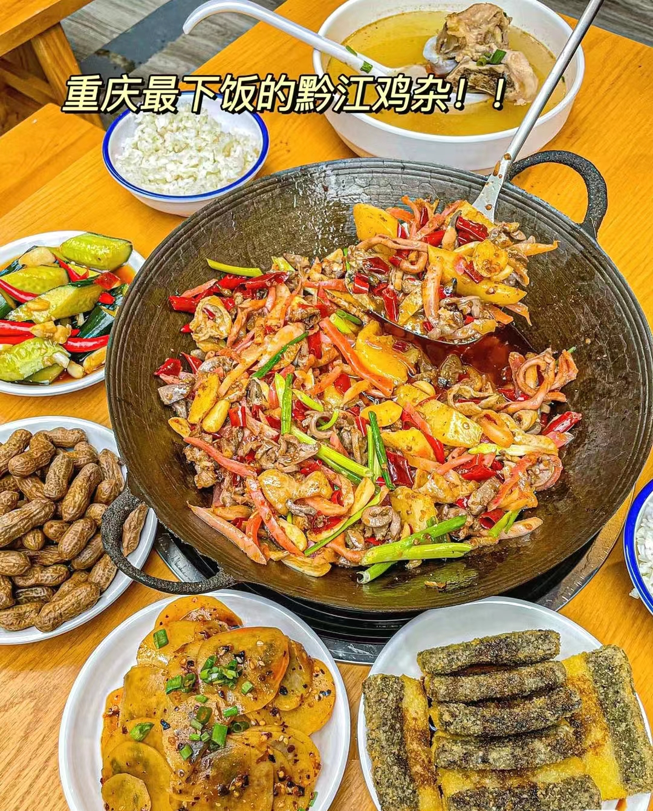
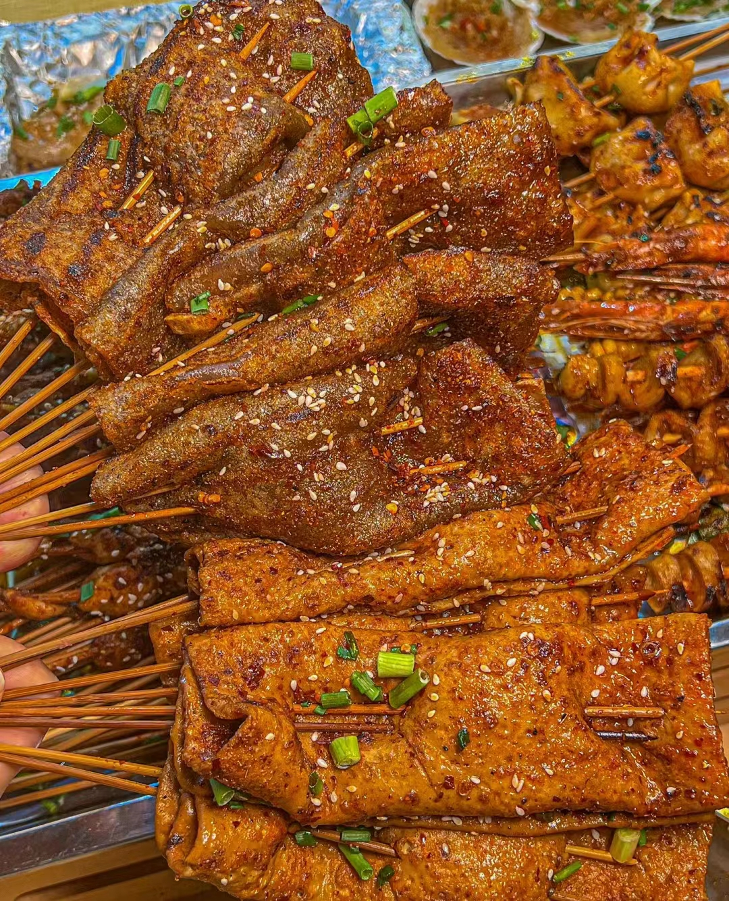

美食特色
重庆美食以其独特的风味和多样性而闻名，这里有许多令人垂涎欲滴的地方特色美食，如重庆火锅、重庆小面、酸辣粉、豆花饭、万州烤鱼、黔江鸡杂、芋儿腓肠鸡等，让我们一起来品尝重庆美食吧!
| 重庆火锅 | 重庆火锅，又称毛肚火锅或麻辣火锅，系四大菜系之一的川菜系饮食，是中国传统饮食方式之一；以“辣、麻、咸、鲜、香、脆”为其口味，具有菜品多样、调味独特、吃法豪放等特点。  |
|
| 重庆小面 | 重庆小面（Chongqing Noodles），属于川菜面食，是重庆四大特色之一。主料为新鲜小麦粉面条，重庆人称之为"水面"、"水叶子"。  |
|
| 重庆酸辣粉 |
重庆酸辣粉是一种著名的川菜小吃，以其独特的酸、辣、鲜、香为主要口味特点，是重庆的代表性美食之一。它的主要原料是红薯粉条，加上花椒、红油豆瓣酱、蒜末、姜末、豆芽、花生米、芝麻、香菜等调料，以及醋、酱油、鸡精等调味料制作而成。  |
|
| 万州烤鱼 | 万州烤鱼把鱼剖洗净后平放在铁夹中，放在炉上用木炭烧烤，盛到专用铁盘中，浇上用牛油、红油、白糖、花椒、辣椒等调味品炒出底料，放上西芹、豆芽等爽口菜。口味咸辣。  |
|
| 黔江鸡杂 | 爆椒鸡杂是地道的重庆江湖菜，鸡杂的腥膻味重，将其与辣椒、泡椒和葱姜蒜同炒，热菜油烹饪红艳艳的泡椒、粉嫩嫩的泡萝卜丝，既可以去除鸡杂的异味，还使成菜脆嫩鲜香、辣得人食欲大增。  |
|
| 烤豆干苕皮 | 烤苕皮是川渝地区的特色小吃。烤苕皮是烤制用红薯粉做的凉皮。烤苕皮是以烧烤的手法烹饪苕皮而做出的小吃。是一道在川渝地区常见的烧烤素串。  |
|
让我们一起探索山城重庆吧!